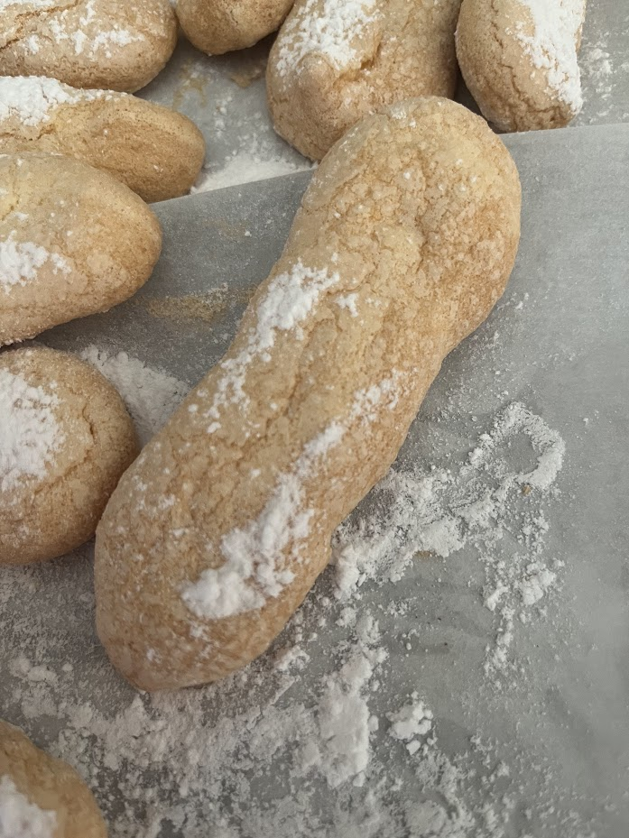
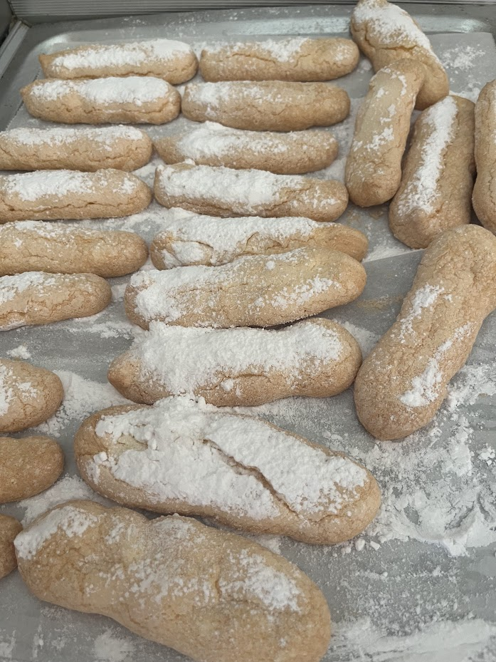
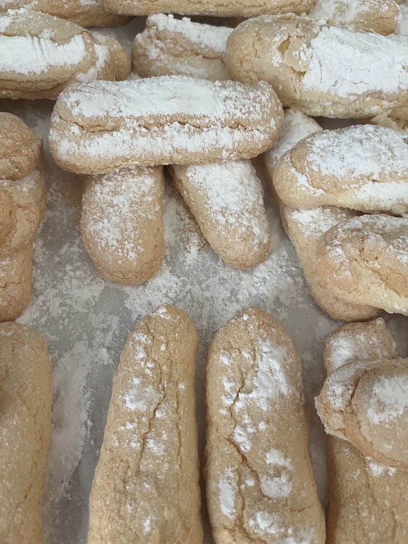

Biscuits à la cuiller
⏱️ 25 min
🔥 Facile
👥 Environ 40 biscuits



Étapes
- Préchauffez le four à 180°C chaleur traditionnelle.
- Séparez les blancs des jaunes.
- Fouettez les jaunes avec 125 g de sucre semoule jusqu’à obtenir un mélange très pâle et mousseux.
- Montez les blancs en neige ferme, puis ajoutez les 25 g de sucre restants pour les serrer.
- Incorporez délicatement les blancs aux jaunes en soulevant la masse.
- Tamisez la farine puis ajoutez-la en pluie. Mélangez délicatement.
- Remplissez une poche à douille (douille lisse 1 cm).
- Dressez des bâtonnets de 8–10 cm sur une plaque recouverte de papier cuisson.
- Saupoudrez généreusement de sucre glace, attendez 2 min, puis saupoudrez une seconde fois.
- Enfournez 18 min environ, jusqu’à légère coloration.
- Laissez refroidir sur grille.